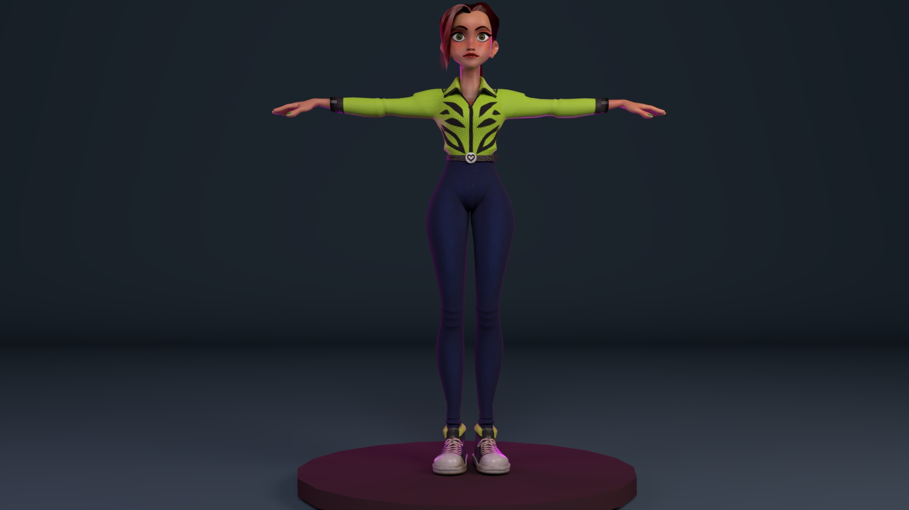
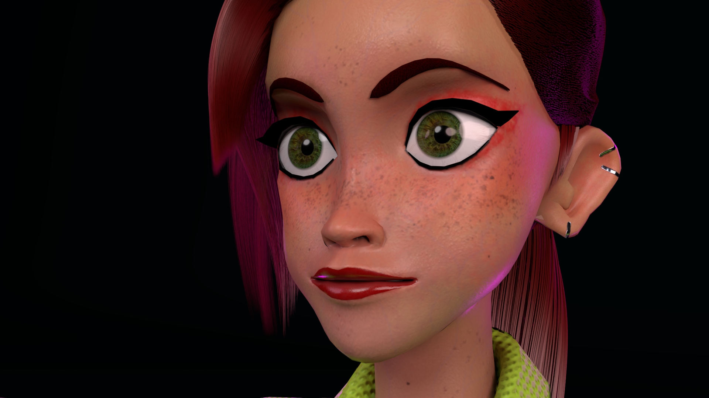
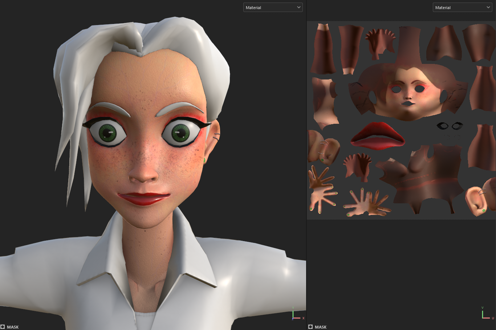
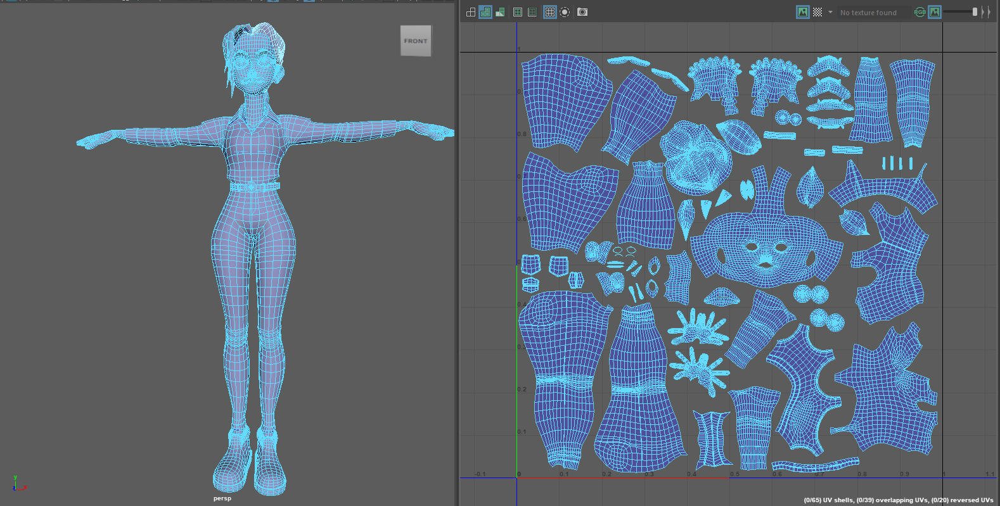

Details
UV Mapping | Texturing | Lighting | Rendering
Autodesk Maya | Adobe Substance Painter | XGen
About the Work
For this project, I worked with a freely available character model. I used Substance Painter to texture the character and Maya to set up the lighting and create the final renders.
I also experimented with XGen to create hair. UV mapping and working with XGen were the most challenging parts of the process. Creating and controlling the hair required more experimentation than I expected, and it is something I would like to keep learning.
The project helped me understand how textures, materials, hair, and lighting work together to shape a character's appearance. The additional images show the UV layout and stages of the process.